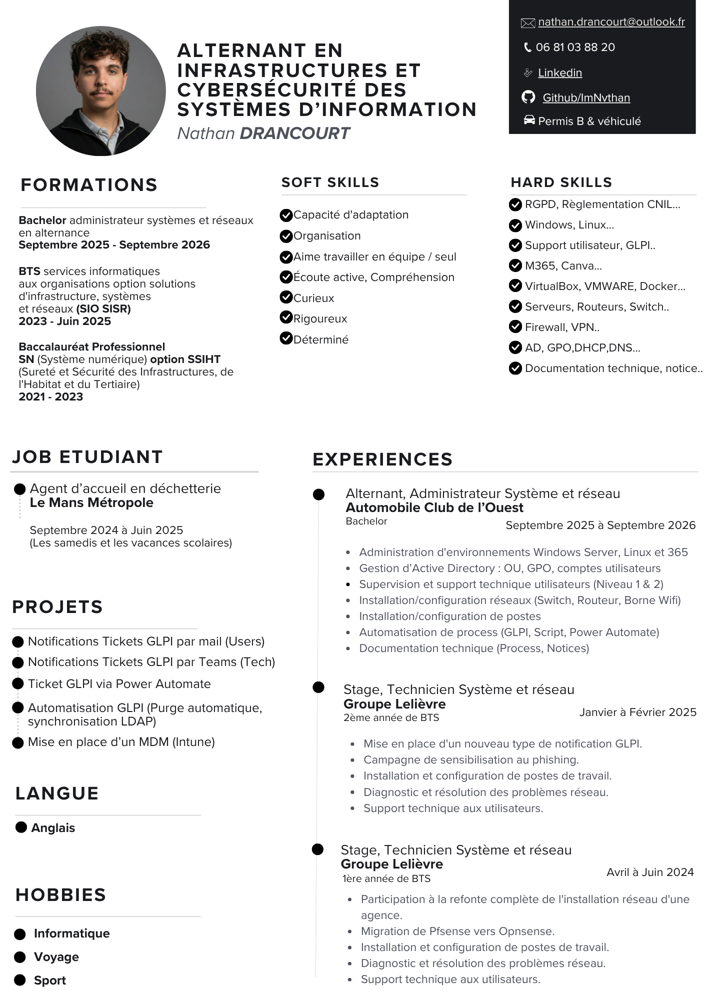

Passionné par l'informatique, spécialisé en systèmes et réseaux. Actuellement en Bachelor Administrateur Systèmes & Réseaux au CESI en alternance à l'Automobile Club de l'Ouest. Rigoureux, curieux, orienté documentation.
Après un Bac Pro Systèmes Numériques et un BTS SIO option SISR, je poursuis un Bachelor Administrateur Systèmes & Réseaux au CESI en alternance à l'Automobile Club de l'Ouest depuis septembre 2025.
J'ai travaillé sur des environnements Windows Server, Linux, Active Directory, Microsoft 365, GLPI et Docker, ainsi que sur des projets réseau (VLAN, pare-feu, supervision). J'accorde une grande importance à la documentation, à la fiabilité et à la compréhension globale des systèmes.
Curieux et rigoureux, j'aime analyser les problématiques techniques et progresser continuellement dans un environnement professionnel stimulant.
{
"name": "Nathan Drancourt",
"role": "Sysadmin & Network Junior",
"location": "Le Mans, France",
"company": "Automobile Club de l'Ouest",
"formation":"Bachelor CESI ASR",
"stack": [
"Windows Server", "Linux",
"Active Directory", "M365",
"GLPI", "Docker", "OPNsense"
],
"langues": ["Français", "EN", "ES"],
"status": "alternance" ✓
}

Vous avez un projet, une mission ou une opportunité ? N'hésitez pas à me contacter — je réponds rapidement.